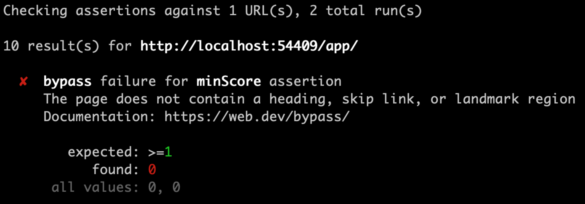
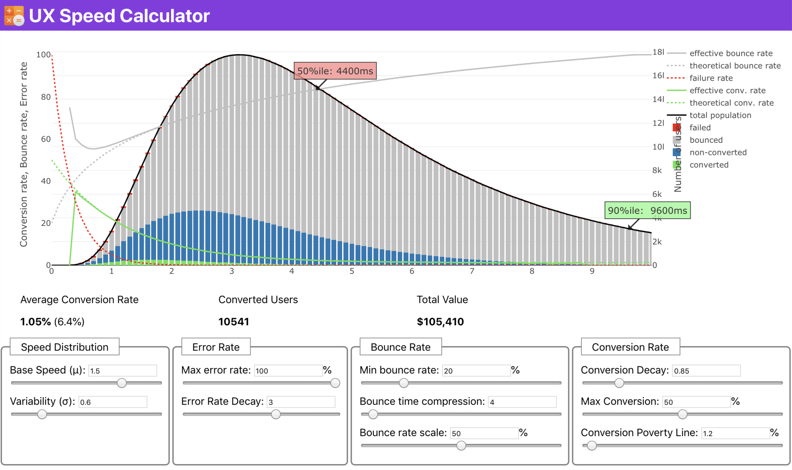
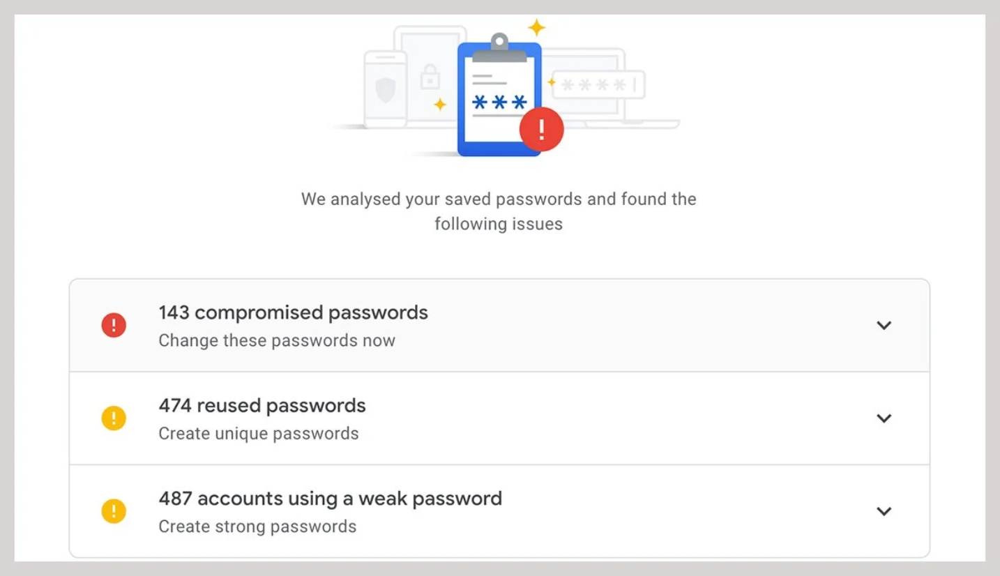
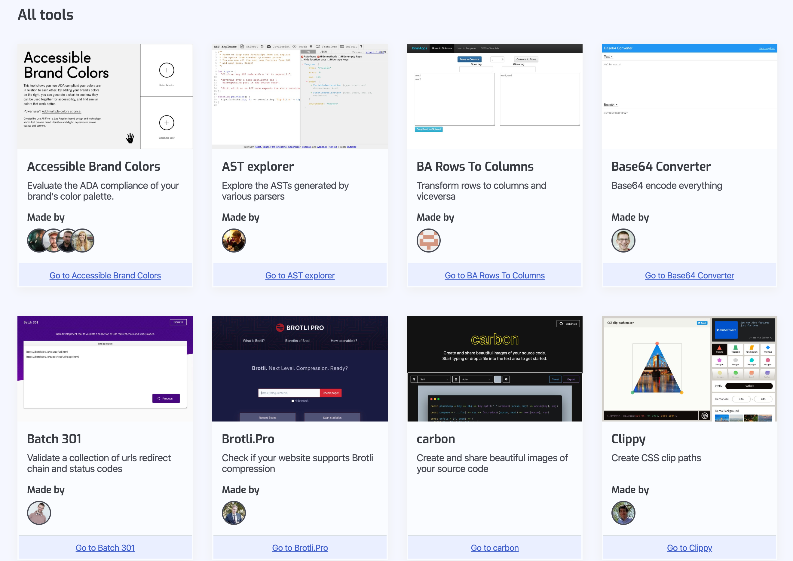

Bleeding Edge Web: January 2020
News From the Bleeding Edge
— Brian Moeskau (@bmoeskau)
React Concurrent Mode
— Keith Murgic
Housekeeping
- Speakers and sponsors always wanted
- Join us on Slack
News from the
Bleeding Edge
Browser Pop Quiz
Last check September 18, 2019:
Browser Pop Quiz
As of January 21, 2020:
Firefox 72

Released January 7th — Release Notes
- Mostly an incremental release
- Lots of minor dev tools, JS and CSS updates
Safari 13

Released in July — Release Notes
- Lots of Apple-specific features
- "Desktop-class" Safari for iPad
- Improved Mac and WKWebView security
- Faster rendering in iOS & watchOS
- Native macOS keychain sign-in
- Improvements for payments, media, web inspector and more
Bonus: Opera

- Opera was purchased by a Chinese investor group in 2018
- The company pivoted to selling predatory short-term loan apps
- These apps account for over 42% of revenue
- The CEO directed $30M toward a... karaoke app
All signs are pointing down the drain
Languages, Libraries &
Frameworks
Lighthouse CI
Automate running Lighthouse for every commit, viewing the changes, and preventing regressions
- Lighthouse reports baked into every PR
- Enforce performance budgets
- Compare site versions
A CLI, cURL-like tool for humans
- A command line tool, like cURL, but much nicer
- Simple, natural HTTP request syntax
- Colorized output

A-Frame 1.0.0
A web framework for building virtual reality experiences
Released Dec 16th
- Started in Dec 2015
- Finally ready for primetime, along with the WebXR spec
- Easily build web-first VR experiences
2020 Front-End Perf Checklist
Everything you need to know to create fast experiences on the web today.
Chrome Password Checker
https://passwords.google.com
- If you manage passwords in Chrome you now can audit them
- It will also suggest strong passwords a la Safari
WeLeakInfo
In totally unrelated news, weleakinfo.com was seized by the FBI last week
- 12 billion user records from 10,000+ data breaches
- Subscription access for $2/day
- Our regular PSA: don't reuse passwords!
Chrome Phasing Out UA Strings
User agent strings are a mess, and Google wants to kill them
- They are moving to Client Hints
- Chrome 81 (~March): Warnings in pages that read UA
- Chrome 83 (~June): Chrome will freeze its UA string
- Chrome 85 (~Sept): Switch to common desktop/mobile OS strings
Chrome Phasing Out 3rd-Party Cookies
They want to kill them "within 2 years"
- Will make it very hard to track users across sites
- The web is turning toward privacy (see Firefox, Safari)
- Google sees the writing on the wall
This is a list of software (SaaS, PaaS, IaaS, etc.) and other offerings that have free tiers for developers.
- Cloud providers, CDNs, APIs, testing, email, way more...
- It's an amazing amount of stuff — check it out!
- Add to the list on GitHub
A collection of free single-purpose online tools for web developers
- Pretty much as it says on the tin
- Really handy stuff, be sure to take a look
And now for something completely different...
Thanks!
 ←→
←→ /
#